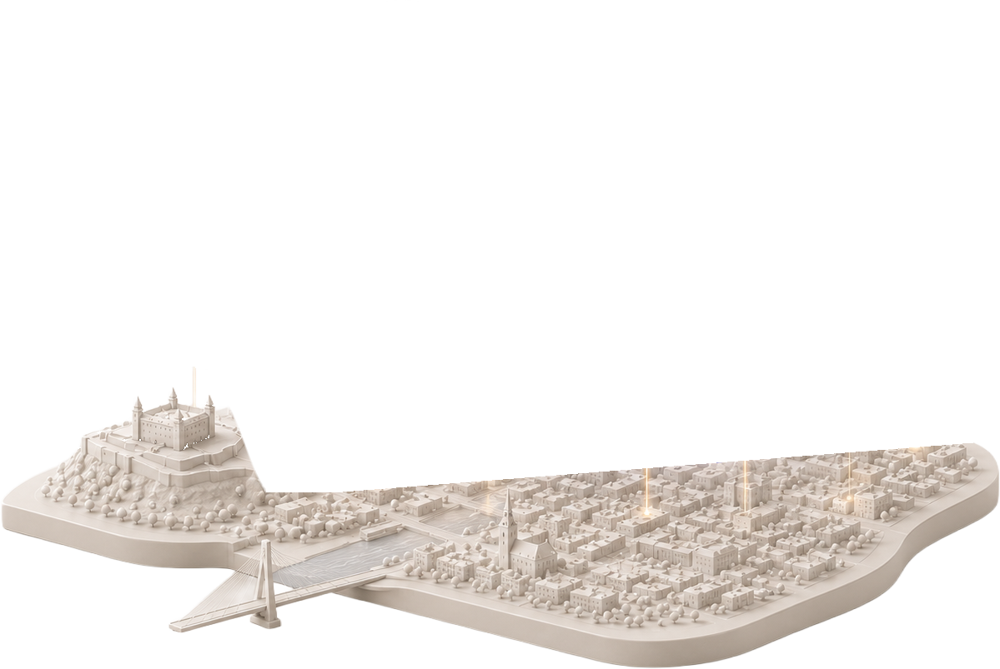
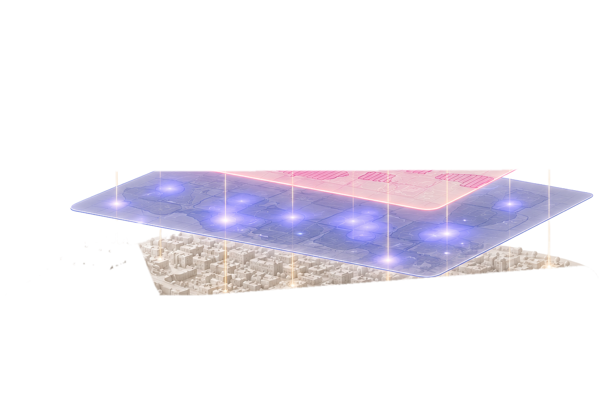
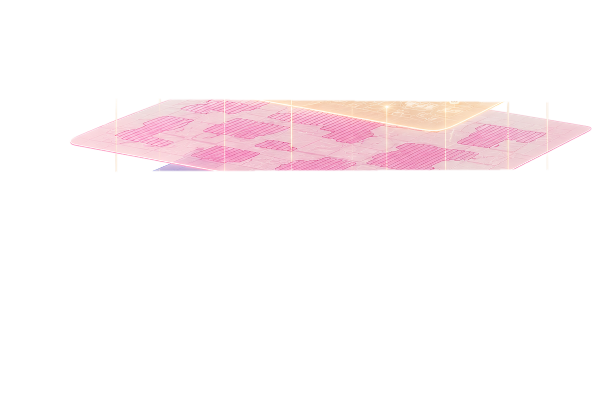
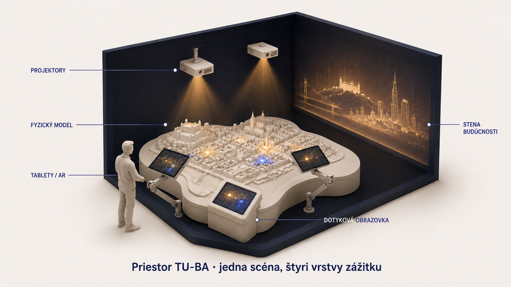
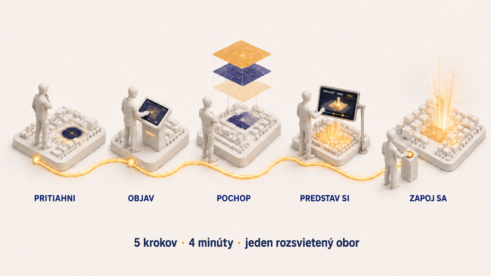
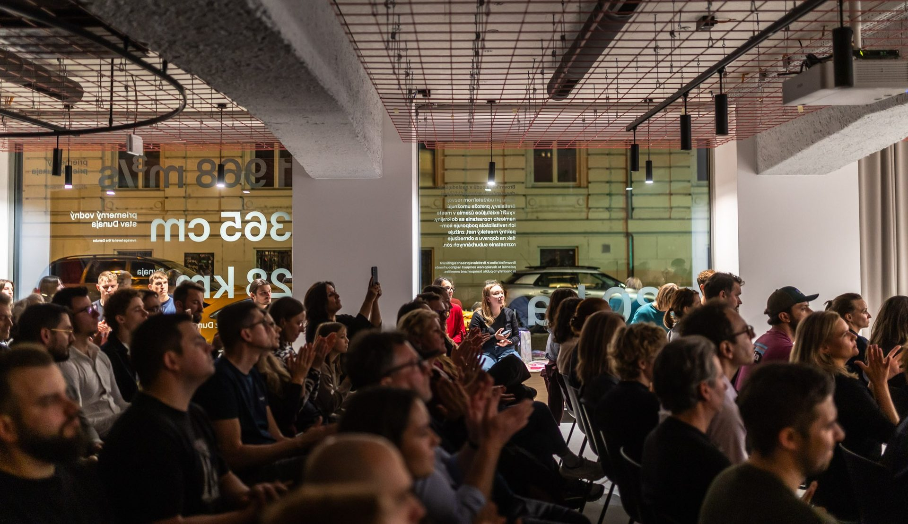
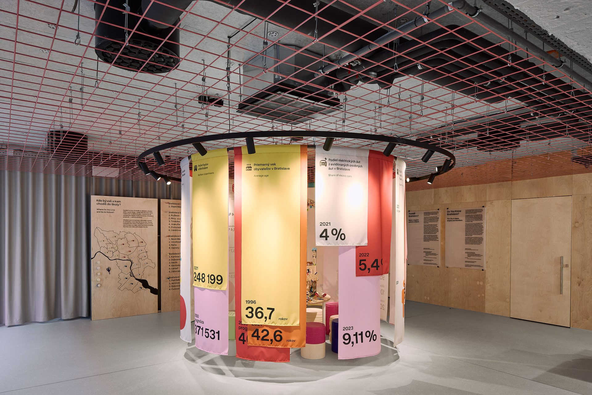
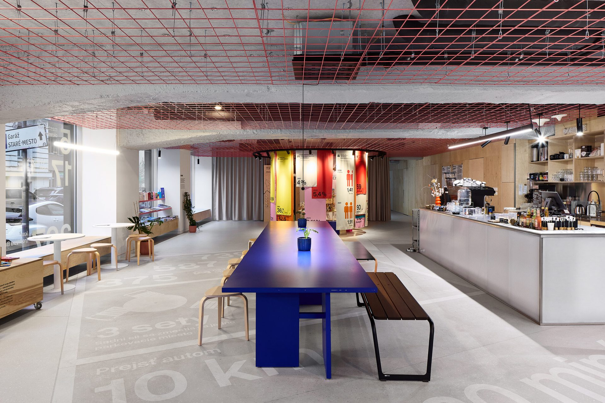

Od nevyužitých území k živým štvrtiam. Pod týmto textom spí 113 skutočných miest z registra MIB — a tvoj scroll ich rozsvieti.
A dobrá správa: to číslo klesá — v 2019 ich bolo 131: 26 sa prebudilo a vyradilo, 8 nových pribudlo. Mesto sa budí aj samo, len pomaly. My mu dávame vypínač.
register BF · MIB · aktualizácia 2022 · pole VYMERA_HA · súčet 579,4 ha · prepočet 0,72 ha / ihriskoTakmer polovica území — 49,6 % počtu, 45,9 % plochy. Na mape sa im práve rozžiarili obrysy. Najväčšia prekážka revitalizácie.
pole DRUH_VLA · súkromní vlastníciMesto priamo kontroluje len 5,5 % plochy brownfieldov. Preto sa revitalizácia nedá nariadiť — dá sa len vyjednať.
13 mesto · 11 štát · 8 mesto+súkromník · 25 inéÚzemia, na ktoré sa niekto pozrel — ohlásený projekt, súťaž, zmena územného plánu. Pozornosť je prvé svetlo: presne tie sa prebúdzajú prvé.
pole ZAMER · 66 so zámerom / 47 beznevyužívané, bez zámeru — indigo, pomalý pulz. Dýcha, nie je mŕtve.
pole ZAMER prázdne · pulz 4 sdočasné využitie — kultúra, sklady. Svetlo mihoce.
P_VYUZITIE · flicker 5,5 sznámy zámer alebo revitalizácia — žiara rastie.
pole ZAMER · amber · glow-rise 3 svyradené z registra — stabilné teplé svetlo, splynie s mestom.
vyradené od 2019 · warmJazyk obra: oči čítajú stav — zavreté = spí · zíva = drieme · otvorené = zámer v registri. Vo Vízii ich otvárajú aj hlasy návštevníkov. legenda obrazovky
obor = pôvodné využitie — Fabrika spí v Palme, Stanica na Filiálke, Kasáreň v raketovej základni
oči = stav · ústa = energia · aura = jas — realita a želanie sa nemiešajú




Základná vrstva: jas parcely = miera života. Spí → drieme → prebúdza sa → žije, priamo z registra.
polia ZAMER · P_VYUZITIE · 113 polygónov15 environmentálnych záťaží ako vzor, nie farba. Preto sa vrstvy nikdy nebijú — každá má vlastný grafický atribút.
pole KONTAMIN · SEZ_POPISIkony obrov a mená 13 území nad 8 ha. Mierka ikony = význam územia.
pole PR_VYU_POP · VYMERA_HAJedno pravidlo scény: projektory kreslia len dáta. Vrstvy sa zapínajú z dotykovej obrazovky — a rovnaké tokeny číta model, tablet aj web.

Scéna pre všetkých — priestor, stavy, svetlo. Nič ju nesupluje.
projekčný mapping · kalibrácia razJediná mení, čo svieti — vrstvy, filtre, čas. Tablet je ďalekohľad: detail, AR minulosť·dnes·budúcnosť; scénu neprepíše, vie len poprosiť „ukáž na modeli".
websocket · master scényQR z výstavy vedie presne na túto stránku — mesto si rozsvietiš doma. Hlasy sa ukladajú ako dataset pre MIB.
1. fáza metodiky: participácia
nové dáta = nový kanál, nie prerábka celku.
dizajn tokeny číta projekcia, obrazovka, tablet aj web.
stavy sú mapované na polia registra — expozícia sa prekreslí sama.
zajtra nájomné bývanie či zeleň — vymení sa dataset, jazyk ostáva.
kvalitu stráži audit · 63 kontrolNa expozícii v TU-BA to isté urobíš dotykom: vyberieš územie, spoznáš jeho príbeh a hlasom rozhodneš, čo tu má vyrásť. Každý hlas svieti na fyzickom modeli — a stáva sa dátami pre MIB.



dáta: register brownfieldov MIB (BF_aktualizácia_2022, ArcGIS) · 113 polygónov, žiadna ilustrácia
ZAŽNI MESTO · koncept pre TU-BA · leumasdam.github.io/zazni-mesto · júl 2026